SUPERRIORMED · 功能医学系列课程
血液健康：组分及评估Blood Health: Components and Evaluation
凝血 · 血常规 · 乙肝五项 · 细胞疗法 · 血浆置换 —— 从一张化验单读出全身的健康叙事
主讲：张楚乔
免疫调控与抗衰医学中心
2026.02.26
免疫调控与抗衰医学中心
2026.02.26
OUR PHILOSOPHY
前瞻的 · 专属的 · 卓越的「生命管理艺术」
与公立体系遵循完全不同的哲学——
「 工匠精神，精益求精。 」
血液，是全身唯一贯穿每个器官的组织。读懂血液，就是读懂免疫、营养、凝血、衰老的全景。
CHAPTER 01 · COAGULATION FUNCTION TEST
凝血功能
内源途径 · 外源途径 · 共同通路
APTTPT / INR纤维蛋白原临床案例：IV 后淤青
一份正常的凝血四项（APTT 28.8s · PT 11.6s · INR 0.98 · Fib 2.51 g/L），是所有静脉输注治疗（IV）前的安全底线。
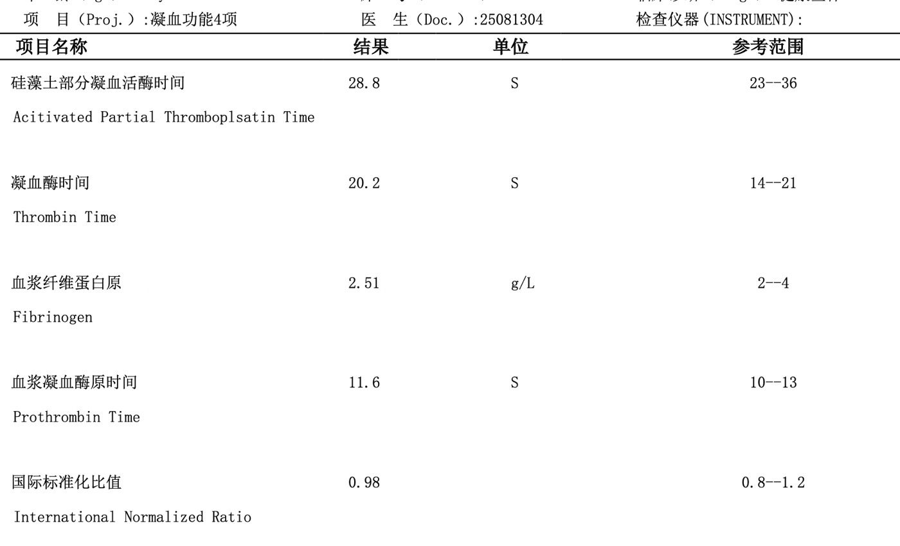
凝血功能筛查（正常示例）：APTT 28.8s / TT 20.2s / Fib 2.51 g/L / PT 11.6s / INR 0.98
CHAPTER 01 · 凝血功能（1）
两条启动路径：内源性 与 外源性 凝血途径
Intrinsic & Extrinsic Pathway —— 级联反应的两把钥匙
内源性途径（Intrinsic Pathway）
- 触发：血管内损伤——血液接触「带负电的异物表面」（血管内皮下暴露的胶原；实验室用硅藻土/玻璃珠模拟）
- 意义：反映血管内自身凝血因子的功能状态
- 对应指标：APTT
外源性途径（Extrinsic Pathway）
- 触发：血管外组织损伤——外伤、手术致组织细胞坏死，释放组织因子（TF，因子Ⅲ），血管外特有的凝血启动因子
- 意义：评估组织因子、因子Ⅶ功能及共同通路完整性
- 对应指标：PT / INR
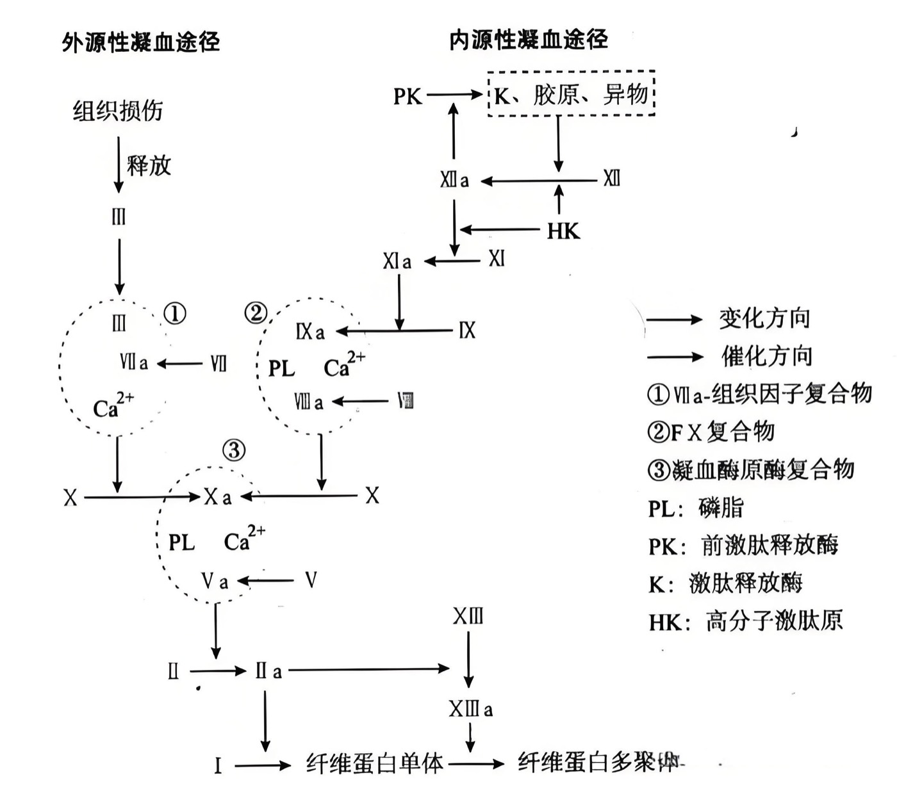
凝血级联：内外源途径汇合于共同通路 → 纤维蛋白原 → 纤维蛋白多聚体
CHAPTER 01 · 凝血功能（2）
因子、APTT / PT / INR 到底在看什么
两个时间指标，两条途径的「秒表」
核心因子
因子Ⅰ纤维蛋白原
→
因子Ⅱ凝血酶原
→
纤维蛋白止血栓最终形态
两大秒表
- APTT（活化部分凝血活酶时间）：内源性途径 + 共同通路早期
- PT（凝血酶原时间）：外源性途径 + 共同通路后期
INR —— 华法林疗效金标准
- 国际标准化比值（International Normalized Ratio），由 PT 校正而来
- 房颤 / 静脉血栓目标 2–3；机械心脏瓣膜 2.5–3.5
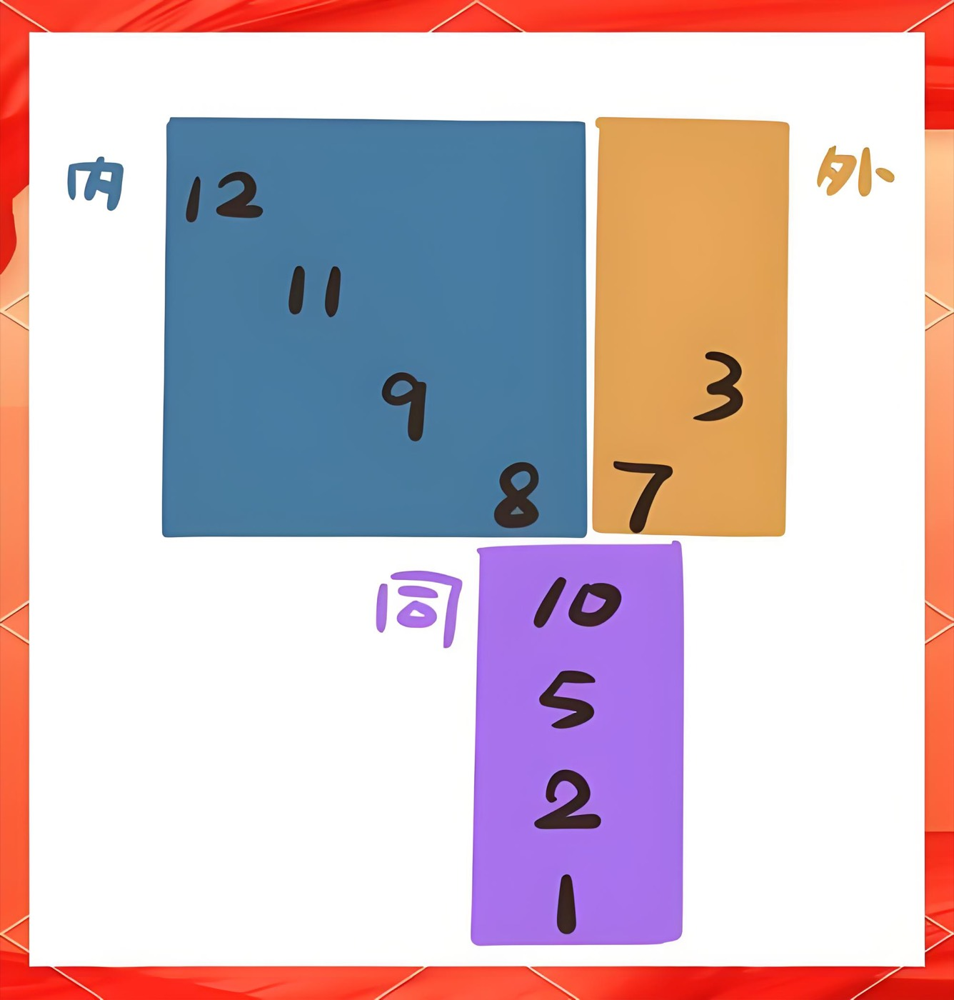
延伸：ABO 血型鉴定玻片法——受检红细胞 × 标准血清的凝集判定
CHAPTER 01 · 凝血功能（3）
一期止血 vs 二期止血：抗板与抗凝的分界线
为什么「抗血小板」和「抗凝」是两类完全不同的药
抗血小板 —— 针对血小板
- 氯吡格雷、阿司匹林
- 作用于一期止血（血管收缩 + 血小板栓形成）
抗凝 —— 针对凝血因子
- 华法林、肝素
- 作用于二期止血（凝血级联 + 纤溶平衡）
手绘图中的细节
- 内源途径 12→11→9→8→10 级联
- 血友病甲缺因子Ⅷ、乙缺因子Ⅸ、丙缺因子Ⅺ
- 维生素 K 与钙离子共同参与
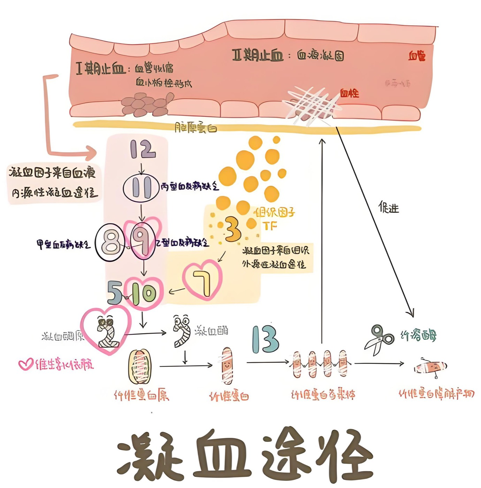
一期止血（血小板栓）与二期止血（凝血级联）机制手绘图
CHAPTER 01 · 临床案例 CLINICAL CASE
案例：IV 后淤青 —— 维生素 K 的关键作用
输液后皮下淤青，先别急着怪护士穿刺技术
维生素 K 是什么
- 脂溶性维生素，依赖胆汁与胰液吸收
- 亚型：K₁（叶绿醌，植物/绿叶蔬菜来源）、K₂（甲萘醌，肠道菌群合成 / 动物组织储存）
为什么影响凝血
- 作为 γ-谷氨酰羧化酶的辅酶
- 参与多种蛋白质的「活化修饰」：凝血因子、骨代谢蛋白（骨钙素）、抗凝蛋白（蛋白 C/S）
- 缺乏 → 凝血因子无法活化 → IV 后易淤青、出血
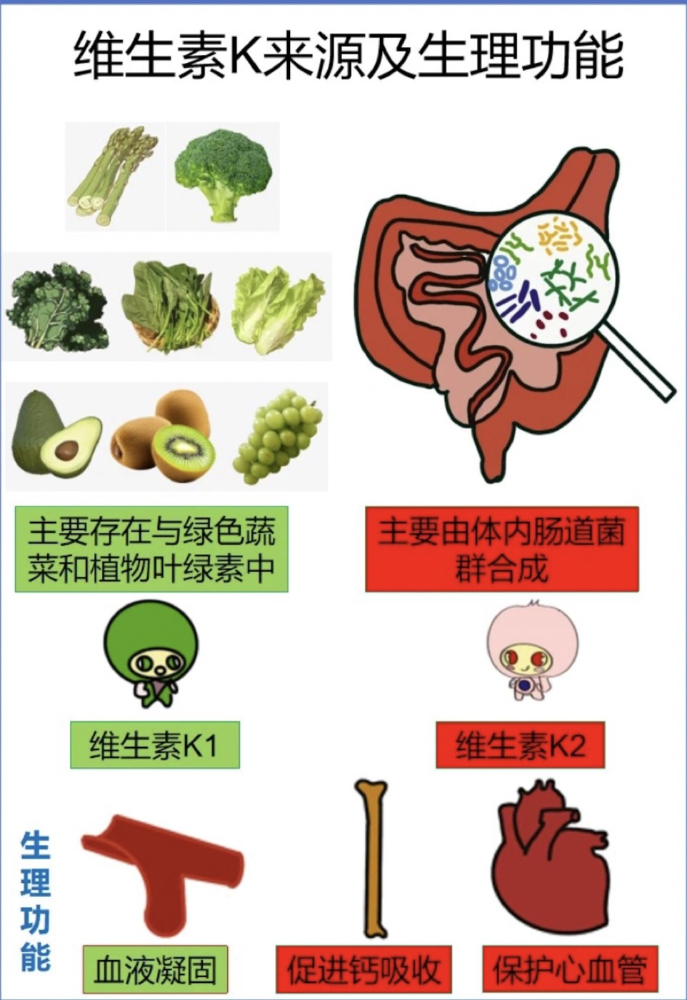
维生素 K：K₁ 来自绿叶蔬菜、K₂ 由肠道菌群合成；参与凝血、钙代谢与心血管保护
CHAPTER 01 · 临床案例 · 续
口服 supplements 却仍缺乏？维生素 K 缺失的六个环节
从「吃进去」到「起作用」，任何一环断裂都算缺乏
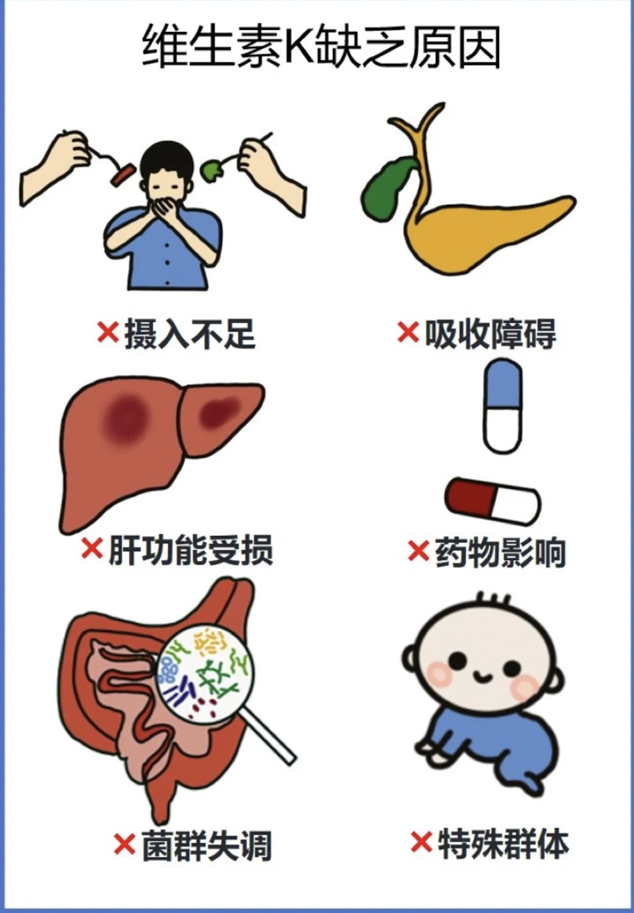
维生素 K 缺乏六大原因：摄入不足 / 吸收障碍 / 肝功能受损 / 药物影响 / 菌群失调 / 特殊人群（新生儿）
功能医学视角的四步排查
① 口服 supplements剂量、剂型、是否随脂肪餐服
② 消化吸收胆汁、胰酶、肠黏膜屏障（K 为脂溶性）
③ 保护肝功肝细胞合成凝血因子 Ⅱ/Ⅶ/Ⅸ/Ⅹ
④ 菌群肠道菌群合成 K₂ —— 菌群失调即「内源性断供」
骨骼之外的角色
- 未羧化骨钙素作用于胰岛 β 细胞 / 脂肪细胞 / 睾丸 → 糖脂代谢与生育力
- Gas6 蛋白参与细胞增殖、抗凋亡；或降低阿尔茨海默病风险
CHAPTER 02 · BLOOD ROUTINE EXAMINATION
血常规
白细胞 · 红细胞 · 血小板 —— 三大系统全景
免疫 / 感染贫血 / 携氧凝血 / 止血案例：过敏 · 贫血
最便宜、最普及的一张化验单，却常常只被看三个箭头。三大系统分别回答三个问题：免疫状态、携氧能力、止血功能。
CHAPTER 02 · 血常规（1）
三大系统，三问
BLOOD ROUTINE EXAMINATION
白细胞系统 —— 免疫与感染
- 白细胞总数、中性粒细胞、淋巴细胞、单核细胞、嗜酸（碱）性粒细胞
红细胞系统 —— 贫血与携氧
- 红细胞计数（RBC）、血红蛋白（HGB/Hb）
血小板系统 —— 凝血与止血
- 血小板计数（PLT）
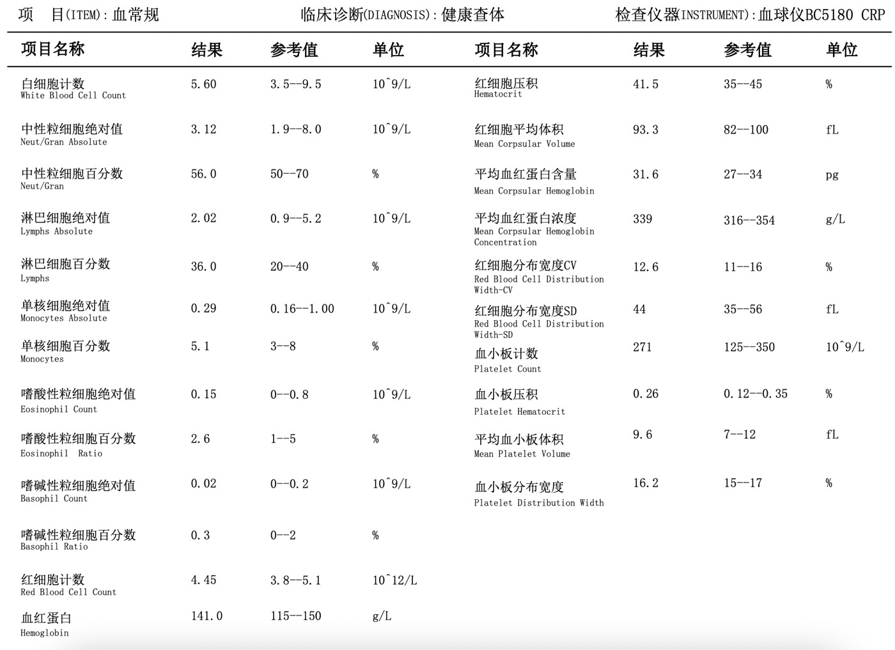
正常血常规示例：WBC 5.60 × RBC 4.45 × HGB 141 g/L × PLT 271 ×
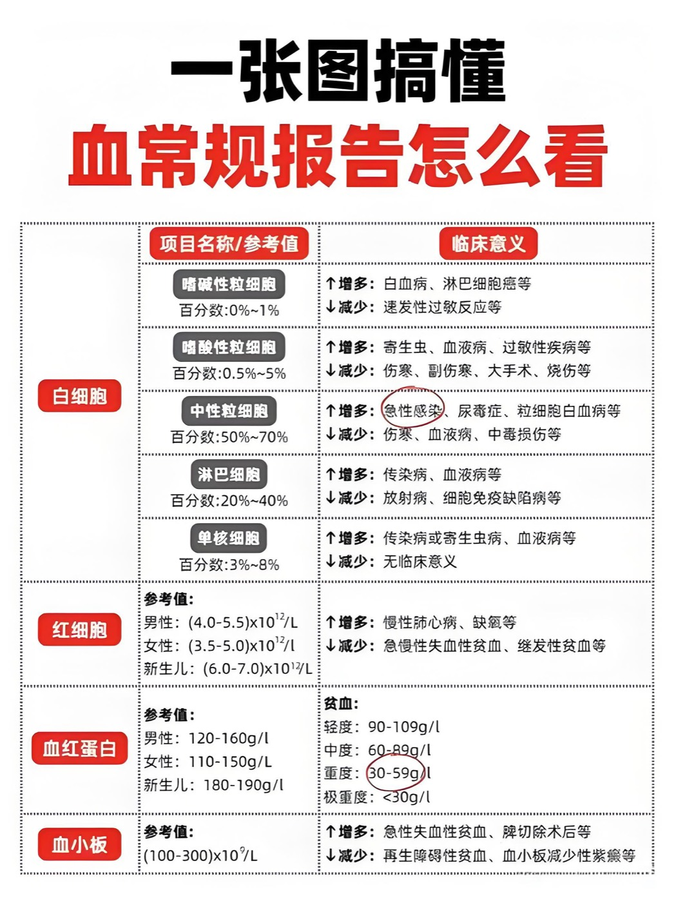
血常规解读速查：五类白细胞比例 · Hb 男 120–160 g/L · 贫血轻中重分度 · PLT 100–300
CHAPTER 02 · 血常规（2）
过敏反应：嗜酸粒细胞升高的四层含义
从肥大细胞到 Th2 —— 一场被放大的免疫误伤
执行者
- 肥大细胞 + 嗜碱性粒细胞：释放组胺、肝素、白三烯、前列腺素 → 瘙痒、红肿、呼吸困难、腹痛
迟发相
- 嗜酸性粒细胞：激活后 4–6 小时浸润组织，释放颗粒酶，加重慢性炎症
抗体工厂
- B 细胞：产生 IgE，Fc 段结合肥大细胞 / 嗜碱性粒细胞 →「致敏装填」
放大器
- Th2 细胞：分泌 IL-4 / IL-5 / IL-13 → 促 IgE、激活嗜酸粒细胞，放大过敏（哮喘、AD）
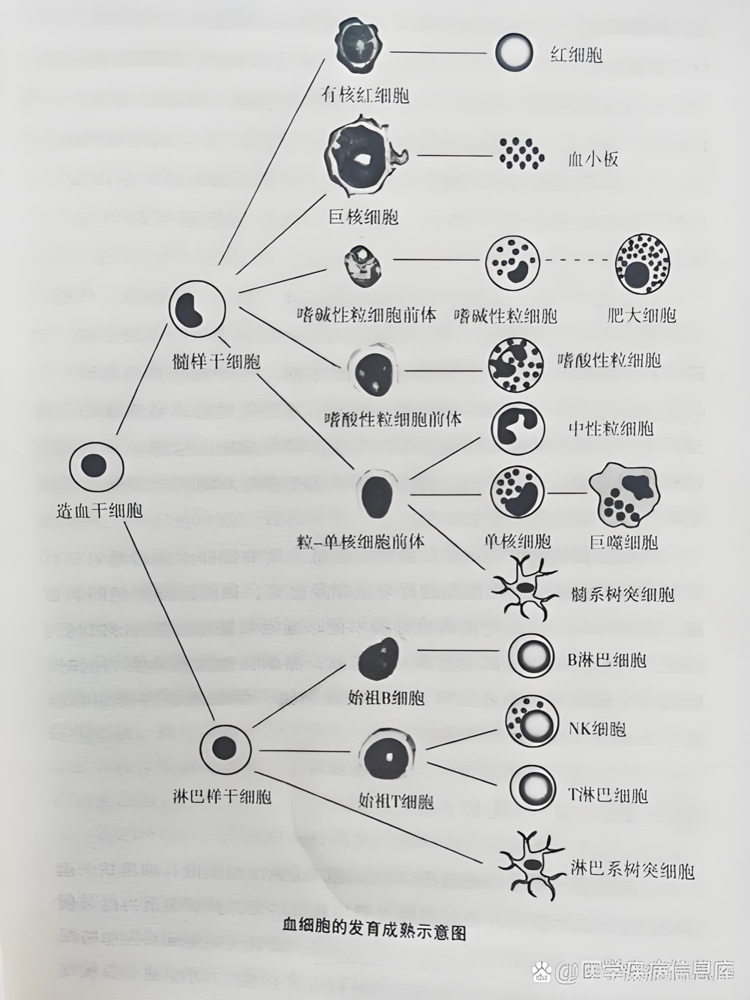
血细胞分化全景：HSC → 髓系 / 淋系 → 红细胞、血小板、粒单核、淋系、NK
CHAPTER 02 · 临床案例 CLINICAL CASE
案例：贫血 —— 缺铁的四种逻辑
Clinical Case: Anemia · 不是所有贫血都要「补」
A · 摄入 / 吸收障碍
- PPI 抑酸、乳糜泻、幽门螺杆菌等吸收环节受阻
B · 铁扣押（隔离）
- 「急性期反应」将铁封存于巨噬细胞，减少释放入血，优先供给免疫
- 炎症状态下补铁 = 为病原体供铁，需先控炎
C · 生理需求增加
- 妊娠、儿童生长期
D · 失血
- 显性 / 隐性失血排查
排泄机制
- 肠道黏膜脱落为主要排出途径（无主动排泄）
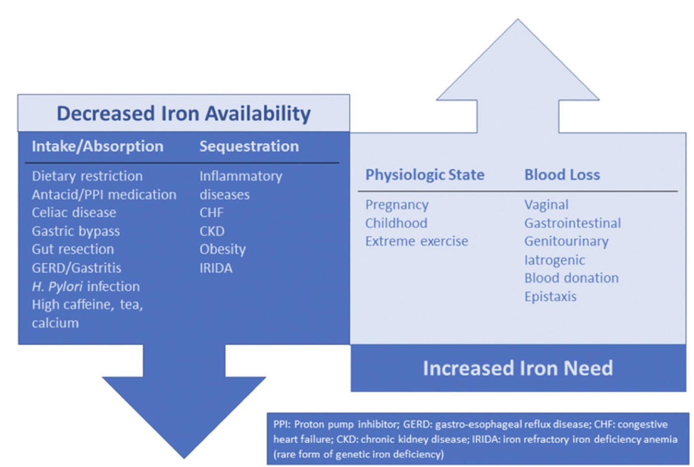
缺铁两大机制：铁可利用性降低（吸收障碍 / 炎症隔离）× 铁需求增加（妊娠、失血）
CHAPTER 03 · INTESTINAL MICROBIOTA THERAPY
肠道干预案例
过敏性哮喘 · 2025.03 → 2025.10 · 七个月随访
嗜酸粒细胞 ↑肺功能中度阻塞Remove · Reinoculate · Repair
以肠道为切入，干预呼吸道疾病——「肠-肺轴」的完整闭环案例。
CHAPTER 03 · 肠道干预案例 · 2025.03 初诊
初诊：过敏倾向 + 中度阻塞性通气功能障碍
血常规与婴幼儿潮气呼吸肺功能（2025.3）

血常规：WBC 4.90 · 淋巴细胞比值 51.8%↑ · 嗜酸粒细胞 0.80↑ · 粒细胞比值 23.3%↓ → 过敏 / 病毒感染倾向

潮气呼吸肺功能：吸呼比 0.49（呼气延长）· 达峰时间比 15.5% / 达峰容积比 19.9% 均中度下降 → 中度阻塞性通气功能障碍
解读：嗜酸粒细胞升高与呼气延长、达峰比下降互相印证——Th2 型气道炎症的血液与肺功能双重证据。
CHAPTER 03 · 肠道干预案例 · 2025.10 复查（7 个月后）
七个月后：肺通气功能恢复正常
FEV1 0.82L（108.6% 预计值）· FEV1/FVC 86.34%

肺功能复查：FVC 0.93L · FEV1/FVC 86.34% → 通气功能正常（流量-容积环恢复）
机制背景
- 过敏性哮喘占哮喘的 50%–70%，与非过敏性哮喘（感染、空气污染触发）同属「气道炎症性疾病」，本质为 Th2 炎症亢进
3R 干预路径
- Remove：去除食物过敏原，减少 Th2 型炎症触发
- Reinoculate：补充罗伊氏乳杆菌，降低血清 IgE
- Repair：补充谷氨酰胺修复肠屏障，减少「肠-肺过敏传递」
CHAPTER 04 · IMMUNITY & CYTOKINES
临床案例：免疫
营养不良级联 · 超长寿菌群 · 感染筛查 · 细胞因子谱
传染病八项细胞因子 12 项117 岁的微生物组
免疫不是一个指标，而是一张网络：营养、菌群、感染史、细胞因子共同构成免疫的「底色」。
CHAPTER 04 · 免疫（1）
免疫的底线是营养，营养的底线是血液
一条从血指标通向死亡的级联链，与一个 117 岁的反例
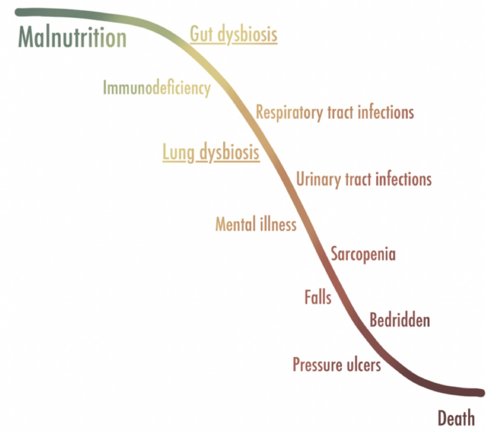
营养不良级联：菌群失调 / 免疫缺陷 → 反复感染 → 肌少症 → 跌倒 → 卧床 → 压疮 → 死亡
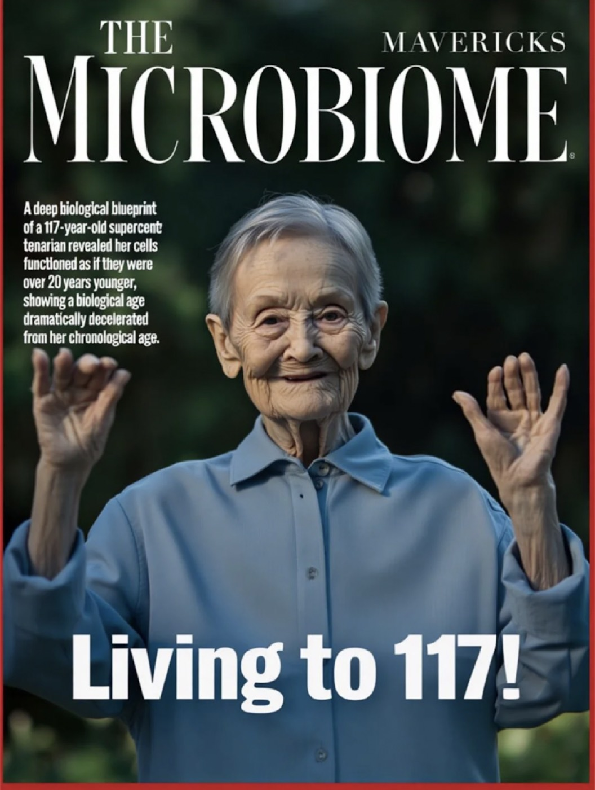
《The Microbiome》：117 岁老人的细胞功能比实际年龄年轻 20 余岁——肠道菌群与长寿
两级启示
- 负向：营养不良经血液免疫指标恶化，启动级联下坡
- 正向：超长寿者的「年轻血液」，菌群是关键变量之一
CHAPTER 04 · 免疫（2）
免疫评估实操：感染屏障与因子谱
传染病八项 × 细胞因子 12 项
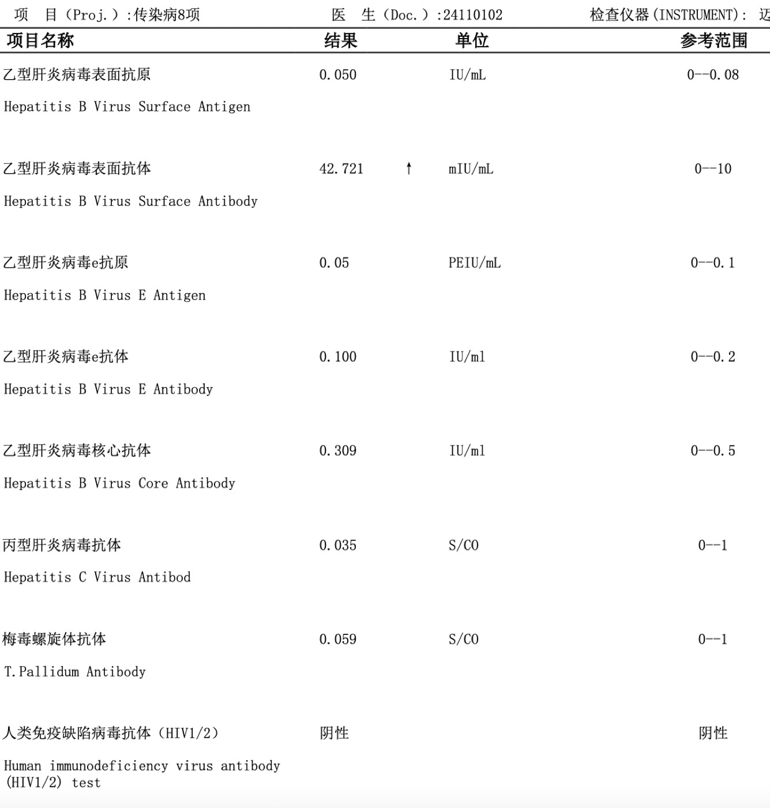
传染病八项：乙肝表面抗体 42.721↑（有免疫力），余乙肝、丙肝、梅毒、HIV 均阴性
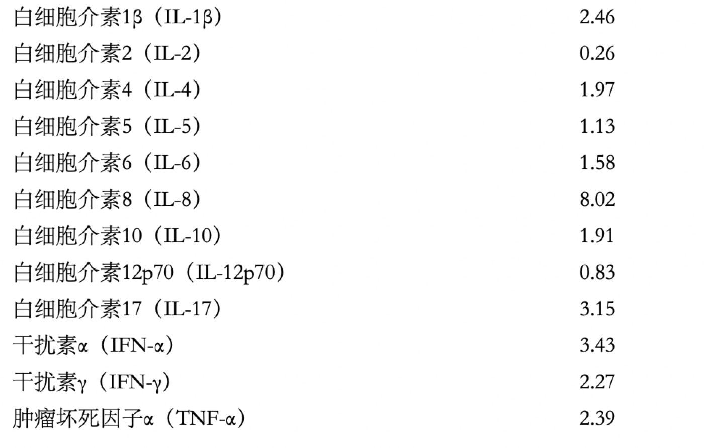
细胞因子 12 项：IL-8 8.02 最高；IL-1β 2.46 / IL-17 3.15 / IFN-α 3.43 / IFN-γ 2.27 / TNF-α 2.39 —— 整体低水平平衡
CHAPTER 05 · HEPATITIS B PANEL
乙肝五项：读懂「模式」而非单值
HBsAg · HBsAb · HBeAg · HBeAb · HBcAb —— 五项组合的六种临床叙事
大三阳 1·3·5小三阳 1·4·5恢复期 2·4·5 / 2·4既往感染 2·5 / 4·5
同一套检测，五项阴阳的不同组合，指向完全不同的感染阶段、传染性与随访策略。
CHAPTER 05 · 乙肝五项（1）
「大三分」与「小三阳」：活动复制 vs 低速携带
第 1·3·5 阳性 ⇄ 第 1·4·5 阳性
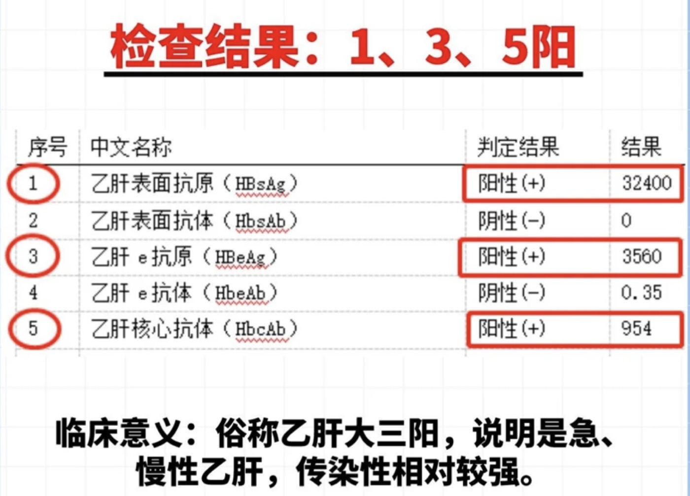
大三阳（1·3·5）：HBsAg 32400（+）· HBeAg 3560（+）· HBcAb 954（+）
大三阳 · 急/慢性感染，传染性强
- HBeAg 阳性 = 病毒活跃复制标志
- 提示急性或慢性乙肝，传染性相对较强
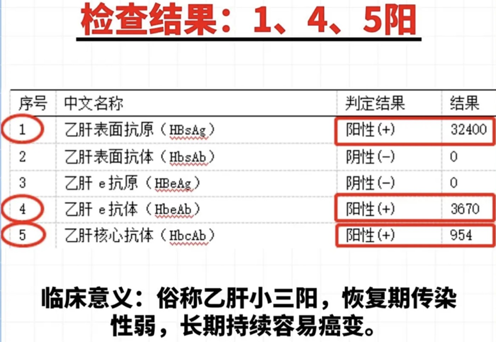
小三阳（1·4·5）：HBsAg 32400（+）· HBeAb 3670（+）· HBcAb 954（+）
小三阳 · 恢复期，但需长期随访
- 传染性弱，多见于恢复期
- 长期持续者警惕癌变风险，不可因「小」而放松监测
CHAPTER 05 · 乙肝五项（2）
恢复期模式：抗体登场的两种组合
2·4·5 阳性 ⇄ 2·4 阳性 —— 免疫已接管
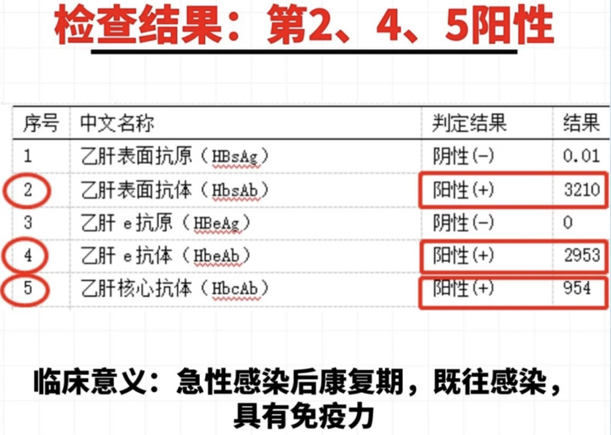
2·4·5 阳性：HBsAb 3210（+）· HBeAb 2953（+）· HBcAb 954（+）
急性感染后康复期
- 表面抗体（HBsAb）显著升高 = 已产生免疫力
- 核心抗体持续 = 既往感染的「档案记录」
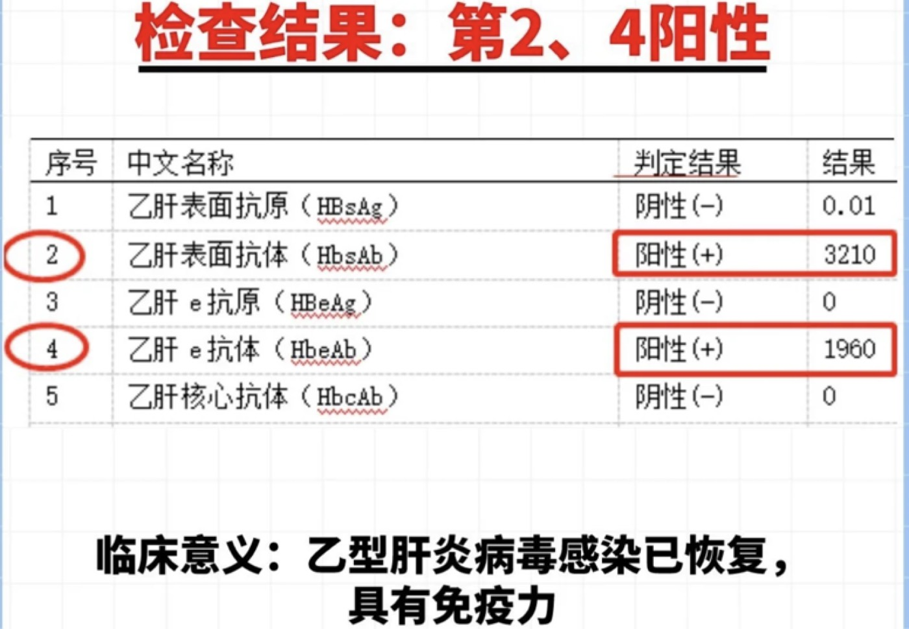
2·4 阳性：HBsAb 3210（+）· HBeAb 1960（+）
感染已恢复
- 乙肝病毒感染已恢复，具有免疫力
- 核心抗体阴转或未检出，感染印记更淡
CHAPTER 05 · 乙肝五项（3）
既往感染模式：没有表面抗原的两种结局
2·5 阳性 ⇄ 4·5 阳性 —— 都不是「大三阳」，但意义不同
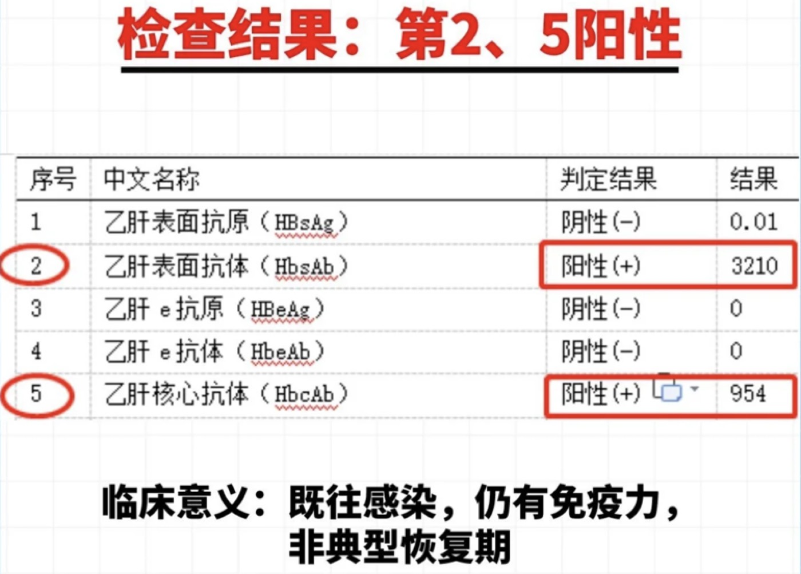
2·5 阳性：HBsAb 3210（+）· HBcAb 954（+）
既往感染，仍有免疫力
- 非典型恢复期；区别于疫苗接种（接种者核心抗体阴性）
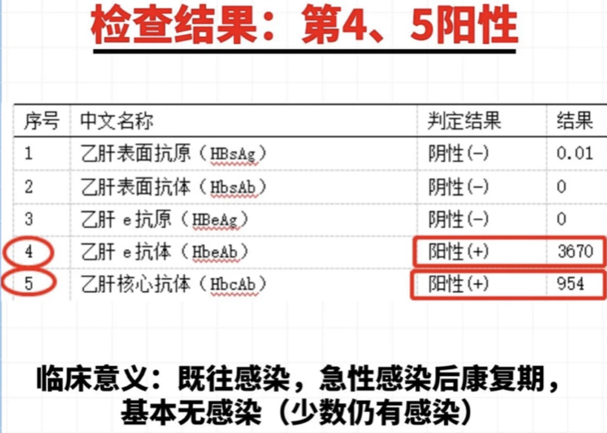
4·5 阳性：HBeAb 3670（+）· HBcAb 954（+）
窗口期样改变 · 需复查
- 既往感染、急性感染后康复期，基本无传染性（少数仍可检出病毒）
- 关键点：此模式无保护性抗体，建议随访 HBsAb 滴度
教学要点：五项的核心是「抗原（病毒存在的证据）× 抗体（免疫应答的痕迹）」—— 抗原在转阴、抗体在登场的动态过程，就是乙肝感染的自然史。
CHAPTER 06 · INNOVATIVE TREATMENT TECHNIQUES
创新医疗技术
CAR-T · NK 细胞 · 合法获批细胞疗法 · 细胞因子
CAR-T 清除 EBVNK 广谱免疫2024 Nature 供体 CAR-T
从「自体改造」到「现货通用」——细胞疗法正在从血液肿瘤走向自身免疫与抗病毒领域。
CHAPTER 06 · 创新技术（1）
CAR-T 清除 EB 病毒 · NK 细胞广谱提升免疫
采集 → 改造 → 扩增 → 回输
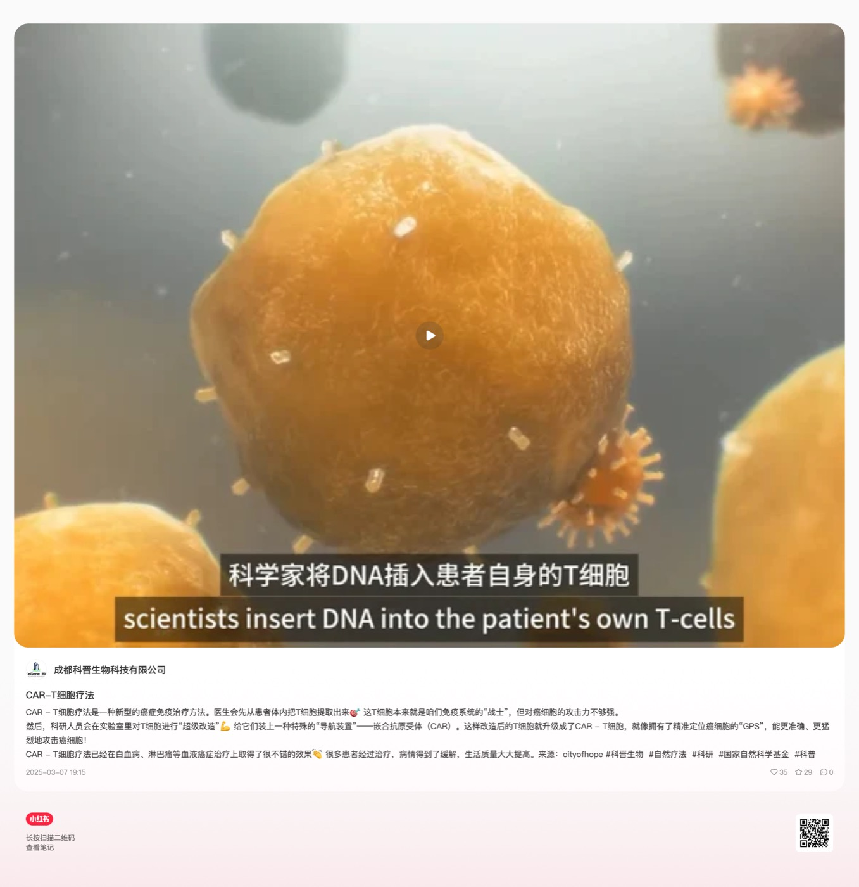
CAR-T 四步流程：白细胞分离采集 T 细胞 → 慢病毒载体导入 CAR → 体外扩增 → 回输
为什么 EBV 是理想靶点
- EBV 潜伏感染期与裂解期表达多种抗原（LMP1 · LMP2A · gp350），是 CAR-T 的理想靶点
已在多种 EBV 相关肿瘤展现疗效
- EBV 阳性淋巴瘤：EBV 阳性弥漫大 B 细胞淋巴瘤（DLBCL）为高危亚型、预后差；CAR-T 在复发/难治者中显示高缓解率
- EBV 阳性鼻咽癌：中国高发，90% 以上与 EBV 感染相关；CAR-T 客观缓解率达 75%
NK 细胞疗法
- 非特异性杀伤，广泛性解决免疫力低下
CHAPTER 06 · 创新技术（2）
合法、获批的细胞疗法边界
LEGAL AND APPROVED CELL THERAPY · 2024-10 Nature 报道
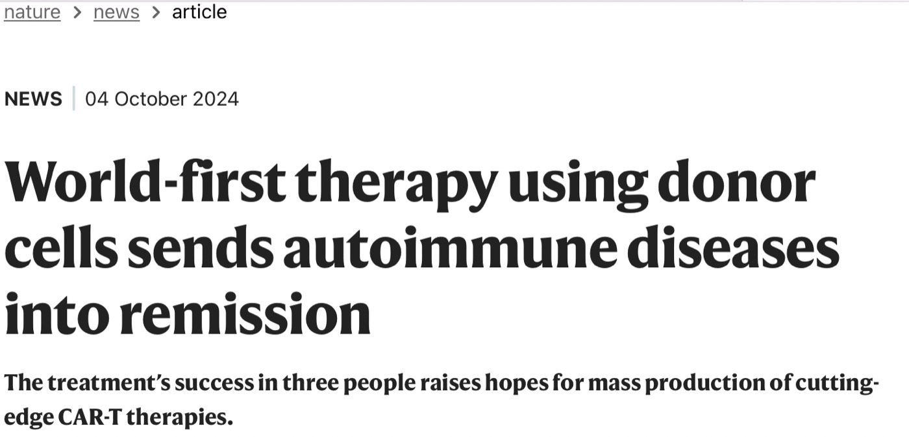
Nature（2024-10-04）：全球首例供体来源（异体现货型）CAR-T治疗自身免疫病，3 名患者获缓解——规模化生产成为可能
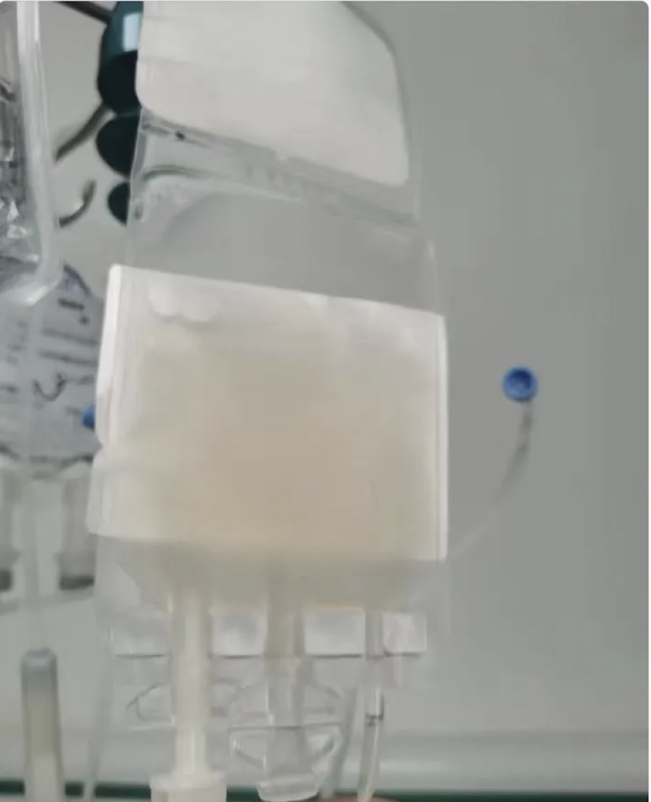
细胞制剂静脉输注：白色不透明细胞悬液（肠外营养/脂肪乳类外观）
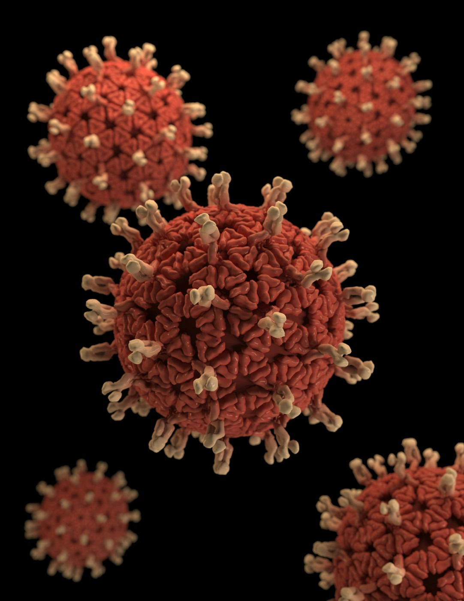
病毒颗粒结构：蛋白外壳与刺突——细胞疗法的靶向对象
合规提示
- 选择细胞疗法前确认：获批适应症 · 合规制备 · 可溯源
- 「前沿」不等于「可随意使用」，边界即安全
CHAPTER 06 · 创新技术（3）
细胞因子：免疫系统的「信使语言」
CYTOKINES · 报告内主要分类
白细胞介素（IL）
- 调节免疫细胞分化、活化、增殖
- IL-2 促 T 细胞增殖 · IL-4 促 Th2 型免疫 · IL-17 促中性粒细胞募集
干扰素（IFN）
- IFN-α：抗病毒 · IFN-γ：增强免疫杀伤、调节免疫平衡
TNF-α
- 强效促炎因子，参与感染、自身免疫病的炎症级联反应
家族全景
- 六大类：IL · IFN · TNF · 集落刺激因子（CSF）· 趋化因子 · 生长因子
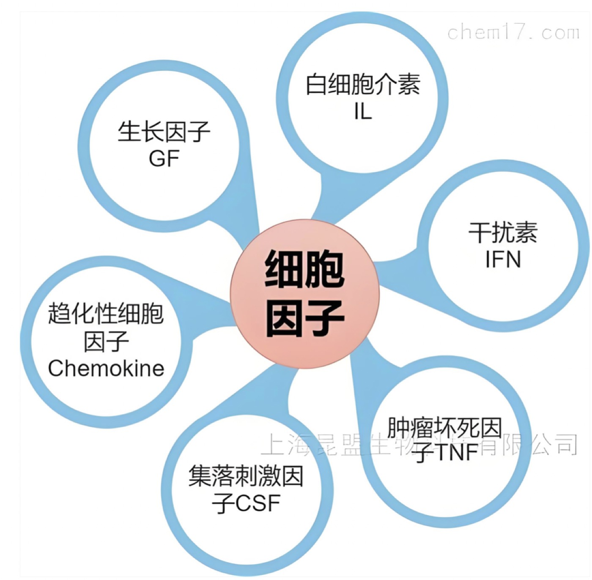
细胞因子六大分类总览
CHAPTER 07 · SENESCENCE & BLOOD REJUVENATION
衰老与血液年轻化
SASP · 衰老细胞清扫 · 治疗性血浆置换（TPE）· 年轻白蛋白
SASP 衰老表型senolyticsTPE 八大应用营销话术鉴别
从「衰老是什么」到「换血是否可行」——本章以证据分级的方式，走完血液抗衰的正面与反面。
CHAPTER 07 · 衰老（1）
衰老：不是时间问题，而是「细胞身份」的迷失
SASP —— Senescence-Associated Secretory Phenotype
衰老的细胞学定义
- 反复的慢性炎症 → 分化的特定细胞转变为功能退化细胞
- 分泌大量炎症因子 · 抵抗凋亡（赖着不走）
- 即为「衰老表型 SASP」
免疫衰老的闭环
- 年轻 HSC → 衰老 HSC → 衰老免疫细胞
- 释放 SASP（IL-1 / IL-6 / TNF-α）+ 氧化应激 → 组织慢性炎症
- 反转钥匙：年轻免疫细胞可清除衰老细胞
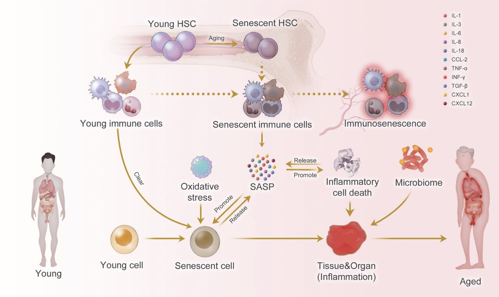
免疫衰老机制：衰老 HSC → SASP（IL-1/IL-6/TNF-α）→ 慢性炎症 → 组织退行
CHAPTER 07 · 衰老（2）
「一次细胞裂解，清扫经年累月积攒的衰老细胞」
SASP 的构成 与 衰老细胞的识别特征
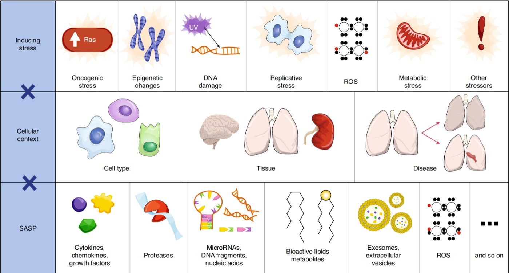
SASP 由应激源（致癌 / DNA 损伤 / ROS / 代谢）× 细胞类型 / 组织 / 疾病背景共同决定，含细胞因子、蛋白酶、microRNA、外泌体
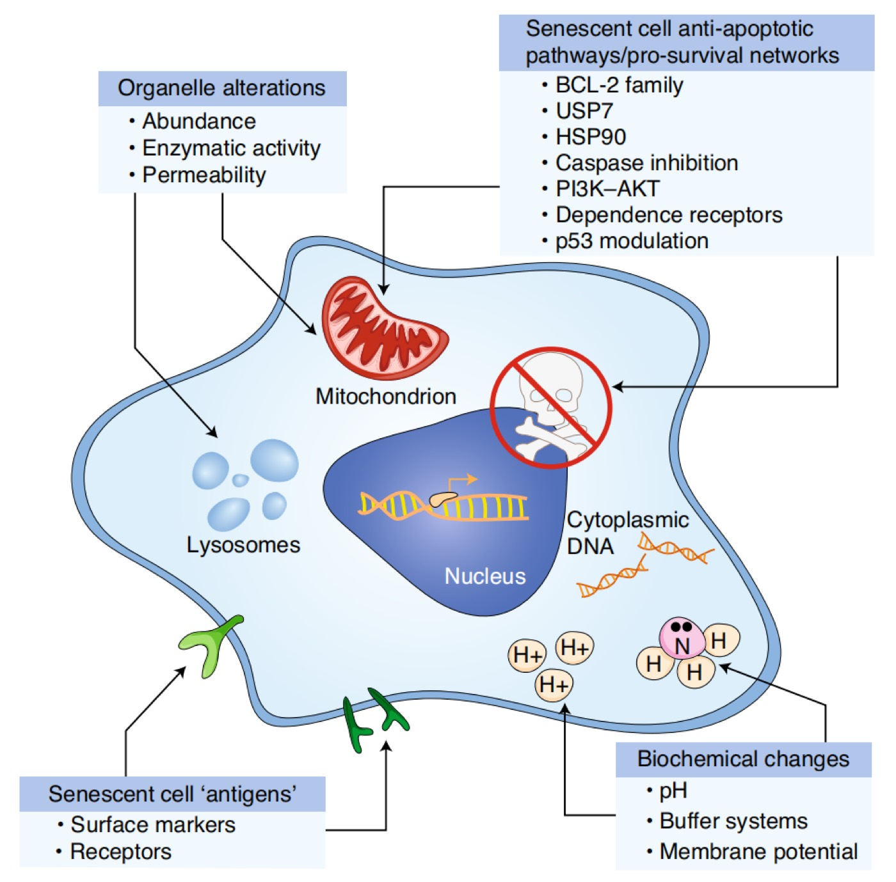
衰老细胞特征：线粒体 / 溶酶体改变 · BCL-2 / p53 抗凋亡 · 膜电位与表面标志物改变 · 胞质 DNA
Senolytics 的逻辑
- 衰老细胞靠 BCL-2 抗凋亡存活 → 靶向促其裂解清除
- 「一次细胞裂解」= 周期性清扫策略的通俗表达
CHAPTER 07 · 衰老（3）· 案例资料
干预前的「血液底账」：两份代谢异常的生化全套
血糖、血脂、肾功能——血液年轻化干预前的基线评估
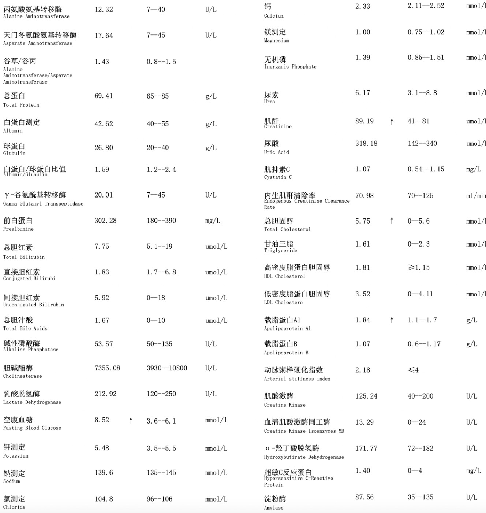
生化全套 A：空腹血糖 8.52↑ · 肌酐 89.19↑ · 总胆固醇 5.75↑ · 载脂蛋白A1 1.84↑ · 钾 5.48↑
解读
- 糖脂代谢异常 + 肾功能需关注 → 慢性炎症性衰老的典型土壤
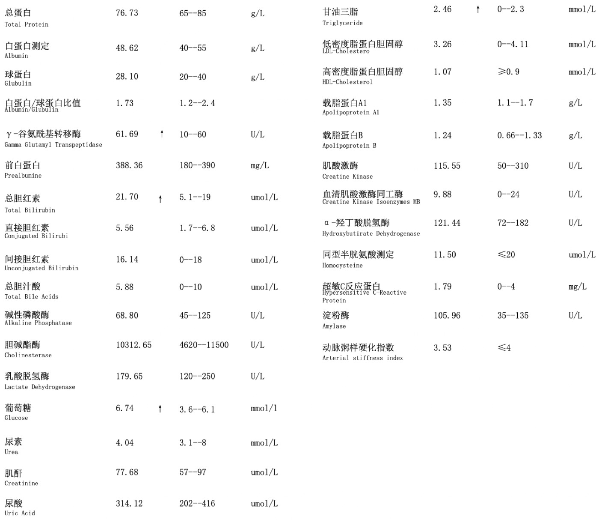
生化全套 B：甘油三酯 2.46↑ · γ-GT 61.69↑ · 总胆红素 21.70↑ · 葡萄糖 6.74↑
解读
- 血糖血脂偏高 + 轻度肝功能异常 → 代谢与肝脏双重负担
衔接：正是这样的代谢性血液异常，构成了后续「血浆置换 / 血液净化」干预的评估起点——但干预本身，需要被理性审视（见本章末）。
CHAPTER 07 · 衰老（4）
年轻血浆：从父子的血浆到治疗性血浆置换
Therapeutic Plasma Exchange（TPE）—— 去旧 · 回新
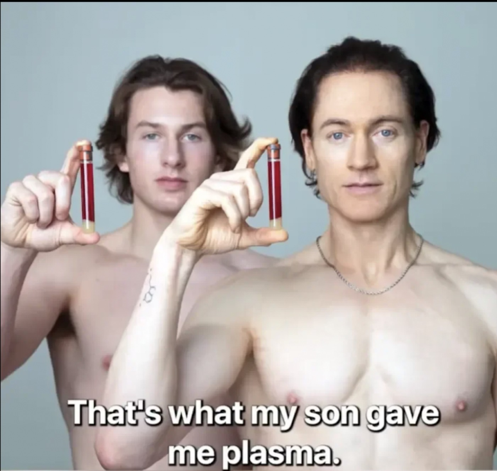
「That is what my son gave me: plasma.」—— 分层析出血浆的采血管：年轻血浆输注抗衰的公众实践样本
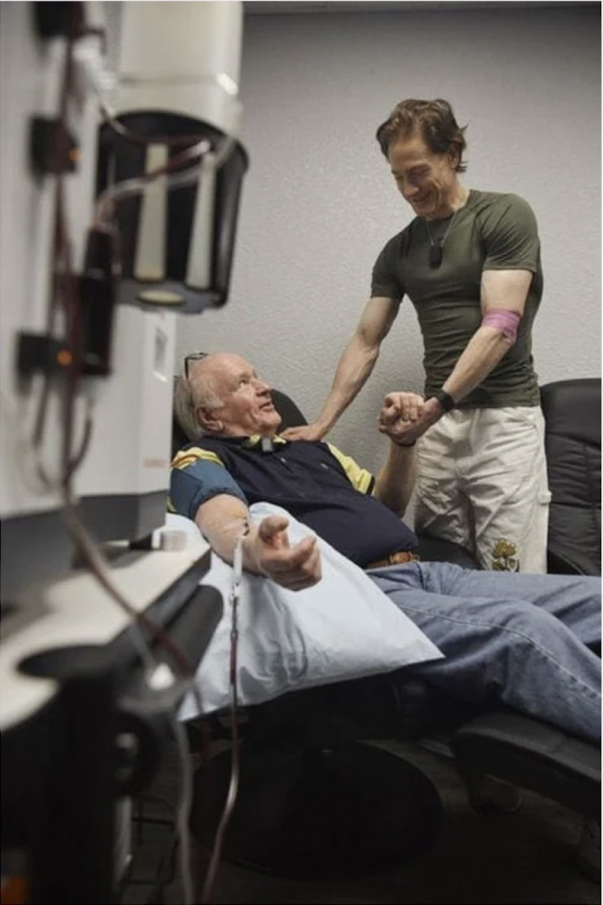
采浆场景：分离机采集血浆，亲属供浆陪同
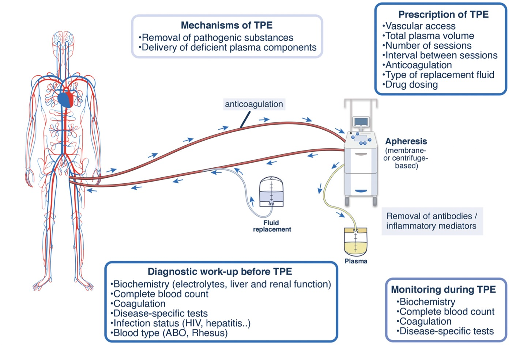
TPE 流程：血液引出 → 抗凝 → 膜式/离心分离 → 弃除血浆 → 置换液（白蛋白/血浆）回输；含处方要点与监测
CHAPTER 07 · 衰老（5）
TPE 的循证版图：八大应用领域
证据等级 Ⅰ–Ⅲ —— 它是治疗手段，不是养生项目
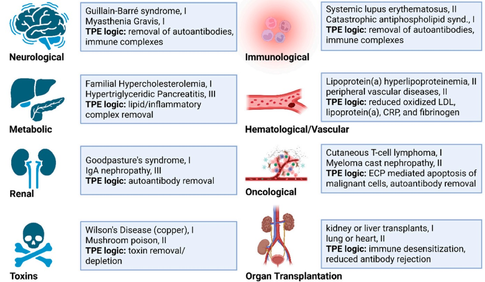
TPE 八大应用：神经（吉兰-巴雷）· 免疫（狼疮）· 代谢（高胆固醇）· 血液 · 肾脏 · 肿瘤（皮肤T细胞淋巴瘤）· 中毒（毒蘑菇）· 器官移植 —— 各标注机制与证据等级 Ⅰ~Ⅲ
CHAPTER 07 · 衰老（6）
「血年轻」：年轻人功能白蛋白
BLOOD YOUTH : YOUNG ALBUMIN · UC Davis 的 AD 试验
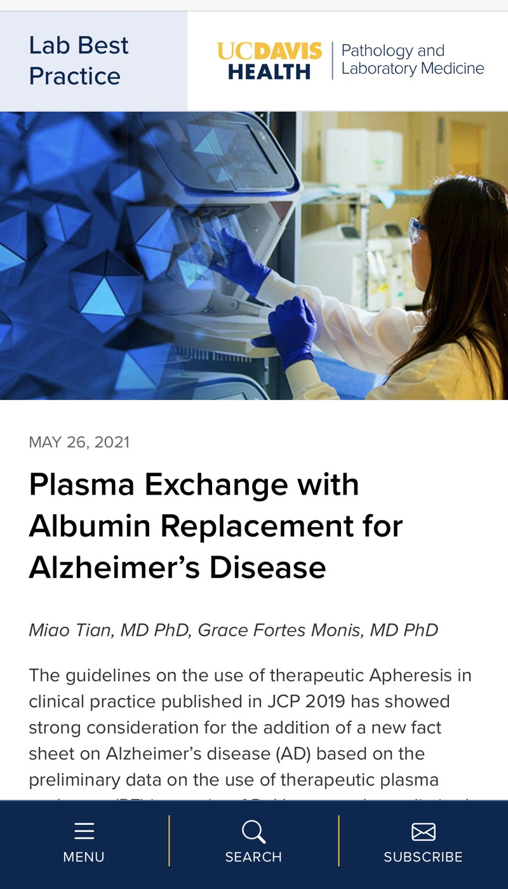
UC Davis Health（2021-05）：血浆置换联合白蛋白替代治疗阿尔茨海默病——将老年痴呆病人血中的功能性蛋白置换，认知症状获明显改善；关联 2019 版治疗性单采指南（JCP）拟新增 AD 适应症
核心逻辑
- 白蛋白是血浆中含量最高的功能性蛋白——携带、清除、抗氧化
- 衰老 = 白蛋白「质」的退化（结合力 ↓ · 翻新率 ↓）
- 置换 = 用年轻供体的功能性白蛋白替换老化蛋白负荷
证据现状
- 案例层面：AD 患者症状明显改善（UC Davis）
- 指南层面：单采指南已开始纳入 AD 相关条目
- 仍属研究性应用，远未到「人人可做」阶段
CHAPTER 07 · 衰老（7）· 临床一景
置换过程中：被滤出的与被留下的
从 ICU 到手术室的康复之路
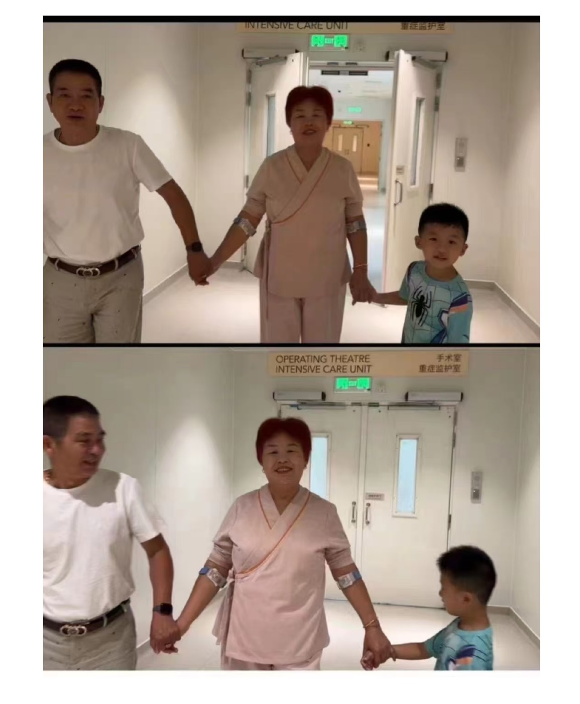
治疗中的患者：手臂留置输注管路，家属陪护下从 ICU 走向手术室——血液治疗背后是具体的人
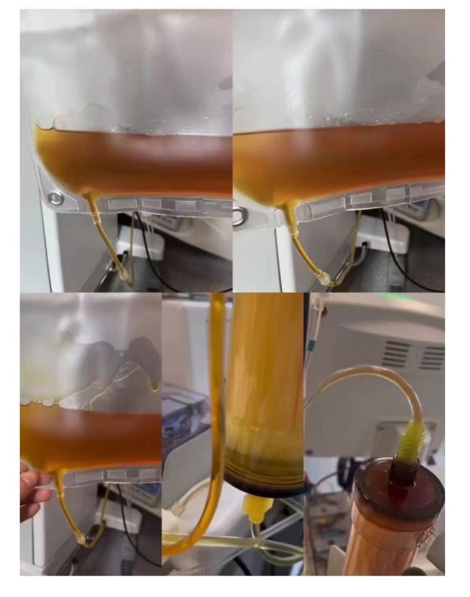
置换出的废血浆呈深黄色（高胆红素/高脂负荷）；管路滤器中血浆颜色对比直观可见
CHAPTER 07 · 衰老（8）· 理性审视
同一个人的「前后对比」，就等于疗效吗？
一张血液净化营销截图的循证拆解
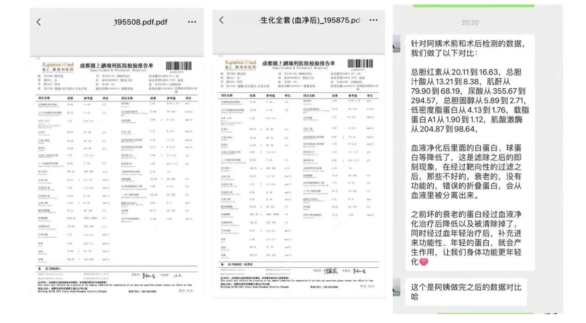
营销话术截图：「滤除衰老蛋白、身体更年轻」—— 总胆红素 20.11→16.63 · 肌酐 79.90→68.19 · 尿酸 355.67→294.57 · 胆固醇 5.89→2.71
数字确实降了，但是——
- 指标下降 ≠ 疗效：TPE 本身就是「物理性移除」，单次置换后脂溶/蛋白结合指标必然一过性下降
- 截图未展示：白蛋白、球蛋白同步下降的风险（半衰期 19 天，恢复缓慢）
- 无对照组、无随访终点的对比，属于典型营销证据而非临床证据
给同僚的三句话
- 问适应症：是否符合 TPE 循证八类？
- 问代价：丢失了什么蛋白、药物、电解质？
- 问终点：下降的指标，与患者预后挂钩吗？
SUPERIORMED · 结语
享受 120 年 25 岁的生命LIVE A 120-YEAR LIFE IN A 25-YEAR-OLD BODY
血液是全身健康的读出器：凝血给安全底线，血常规给免疫全景，蛋白与因子给衰老刻度。
读懂数字背后的机制，才能把「年轻」从营销词变回医学词。
读懂数字背后的机制，才能把「年轻」从营销词变回医学词。
主讲：张楚乔 · 免疫调控与抗衰医学中心 · 2026.02.26
感谢聆听 · 欢迎病例讨论与转诊交流
感谢聆听 · 欢迎病例讨论与转诊交流